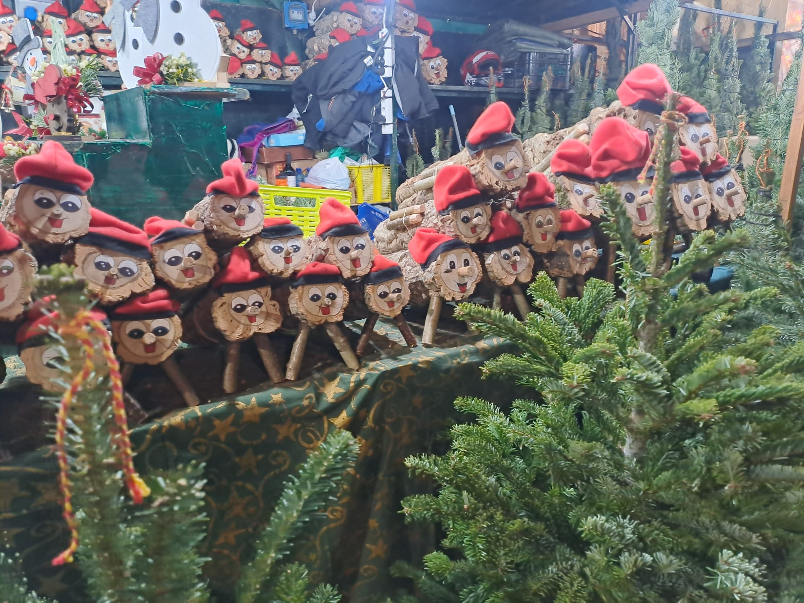

Aneb dárky nemusí nikdo nosit, stačí když se najde někdo, kdo je vykadí.
Na fotce vidíte dvě největší katalánské vánoční hvězdy: Caganera a Tió de Nadal.
První je nenápadná figurka v betlému, která si v koutě dřepne se spuštěnými kalhotami a dělá, co musí.
Druhý je usměvavé polínko s čepicí, které děti několik dní krmí... aby jim pak na Štědrý den vykakalo dárky.
Zní to absurdně? Pro Katalánce je to naprosto normální tradice. Caganer symbolicky „hnojí půdu" a přináší plodnost, hojnost a štěstí do dalšího roku – betlém bez něj je prý recept na smůlu.
Tió de Nadal naopak rozdává sladkosti a drobné dárky hned teď, ovšem až poté, co ho děti pořádně zmlátí klackem a zazpívají mu. Ano, i tohle je výchova.
Obě postavičky spojuje stejná myšlenka: co vyjde ven, přináší dobro. V katalánské kultuře není kakání tabu, ale zdroj života, úrody a prosperity. A taky připomínka, že si jsou všichni rovni – pastýři, králové, politici... i oni musí občas do dřepu.
Takže až vám budou katalánské Vánoce připadat „divné", vězte, že jsou jen upřímně lidské. A ano – tahle tradice funguje už stovky let. 💩🎄
